Dense 3D Tracking in the Wild
TrackCraft3R is the first method that repurposes a video diffusion transformer as a feed-forward dense 3D tracker. Click any thumbnail to view the predicted dense 3D tracks on real-world videos.
LOADING…
1 KAIST 2 Google DeepMind † Corresponding authors
TrackCraft3R is the first method that repurposes a video diffusion transformer as a feed-forward dense 3D tracker. Click any thumbnail to view the predicted dense 3D tracks on real-world videos.
Dense 3D tracking from monocular video is fundamental to dynamic scene understanding. While recent 3D foundation models provide reliable per-frame geometry, recovering object motion in this geometry remains challenging and benefits from strong motion priors learned from real-world videos. Existing 3D trackers either follow iterative paradigms trained from scratch on synthetic data or fine-tune 3D reconstruction models learned from static multi-view images, both lacking real-world motion priors. Pre-trained video diffusion transformers (video DiTs) offer rich spatio-temporal priors from internet-scale videos, making them a promising foundation for 3D tracking. However, their frame-anchored formulation, which generates each frame's content, is fundamentally mismatched with reference-anchored dense 3D tracking, which must follow the same physical points from a reference frame across time.
We present TrackCraft3R, the first method to repurpose a video DiT as a feed-forward dense 3D tracker. Given a monocular video and its frame-anchored reconstruction pointmap, TrackCraft3R predicts a reference-anchored tracking pointmap that follows every pixel of the first frame across time in a single forward pass, along with its visibility. We achieve this through two designs: (i) a dual-latent representation that uses per-frame geometry latents and reference-anchored track latents as dense queries; and (ii) temporal RoPE alignment, which specifies the target timestamp of each track latent. Together, these designs convert the per-frame generative paradigm of video DiTs into a reference-anchored tracking formulation with LoRA fine-tuning.
TrackCraft3R achieves state-of-the-art performance on standard sparse and dense 3D tracking benchmarks, while running 1.3× faster and using 4.6× less peak memory than the strongest prior method. We further demonstrate robustness to large motions and long videos.
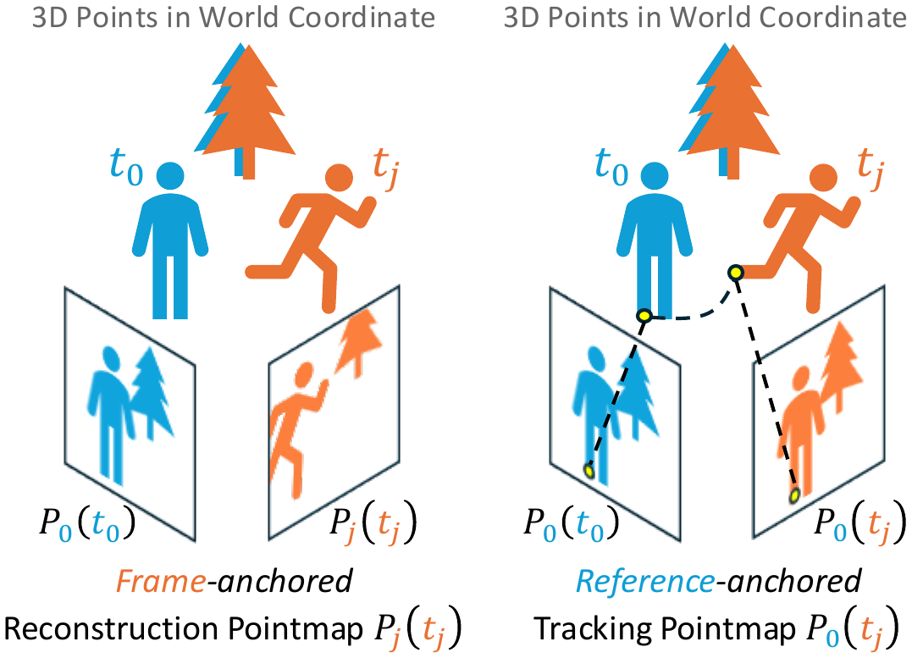
We adopt two pointmap representations in a shared world coordinate frame. The frame-anchored reconstruction pointmap $\mathbf{P}_j(t_j)$ gives the 3D positions of frame $\mathbf{I}_j$ at its own timestamp $t_j$, readily obtained from off-the-shelf depth and camera-pose estimators. The reference-anchored tracking pointmap $\mathbf{P}_0(t_j)$ gives the 3D positions of the content originally seen in $\mathbf{I}_0$ at timestamp $t_j$.
Goal. Given a video $\mathbf{V} = \{\mathbf{I}_j\}_{j=0}^{F}$ and its reconstruction pointmaps $\{\mathbf{P}_j(t_j)\}_{j=0}^{F}$, predict the tracking pointmaps $\{\mathbf{P}_0(t_j)\}_{j=0}^{F}$ that establish dense 3D correspondences across time, together with visibility maps $\{\mathbf{o}_j\}_{j=0}^{F}$.
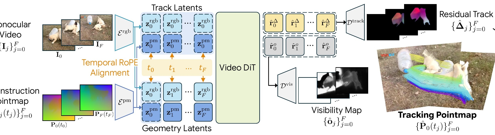
Each RGB frame and its reconstruction pointmap are encoded by separate VAE encoders into latents $\mathbf{z}_j^{\text{rgb}}$ and $\mathbf{z}_j^{\text{pm}}$. We repurpose the video DiT's full 3D attention with two key designs.
The geometry latent $\mathbf{g}_j = [\mathbf{z}_j^{\text{rgb}};\, \mathbf{z}_j^{\text{pm}}]$ couples RGB appearance and 3D geometry at timestamp $t_j$ via channel-wise concatenation. The first-frame-anchored track latent $\mathbf{r}_j = \mathbf{g}_0$ replicates the first-frame geometry latent across all timestamps and serves as a dense query for tracking. Once $\mathbf{r}_j$ matches the same physical point in $\mathbf{g}_j$ via attention, the matched pointmap latent directly provides its 3D position.
To make each track latent attend to the geometry latent at the correct timestamp, we repurpose the temporal axis of 3D RoPE and assign $\mathbf{g}_j$ and $\mathbf{r}_j$ the same temporal index $t_j$. Since RoPE encodes relative position, tokens with identical temporal indices exhibit stronger attention, so each $\mathbf{r}_j$ attends to its $\mathbf{g}_j$ at timestamp $t_j$.
The track-latent outputs are then decoded by two VAE decoders into a residual displacement $\hat{\boldsymbol{\Delta}}_j$ and a visibility map $\hat{\mathbf{o}}_j$, and the tracking pointmap is recovered as $\hat{\mathbf{P}}_0(t_j) = \mathbf{P}_0(t_0) + \hat{\boldsymbol{\Delta}}_j$.
Query point in green. (a) Attention from $\mathbf{r}_5$ to $\{\mathbf{g}_j\}$ concentrates on $\mathbf{g}_5$: RoPE aligns each track latent with the correct timestamp. (b) Within $\mathbf{g}_5$, attention finds the same physical point under motion, yielding accurate dense correspondence between track and geometry latents.
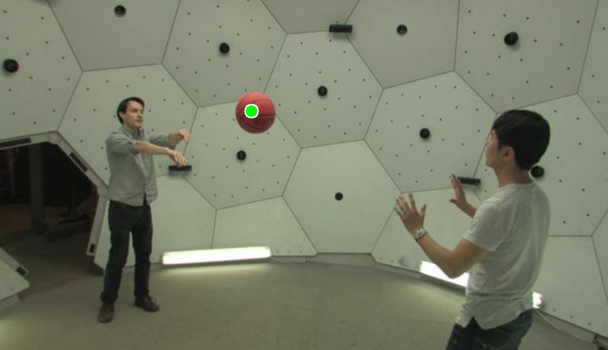
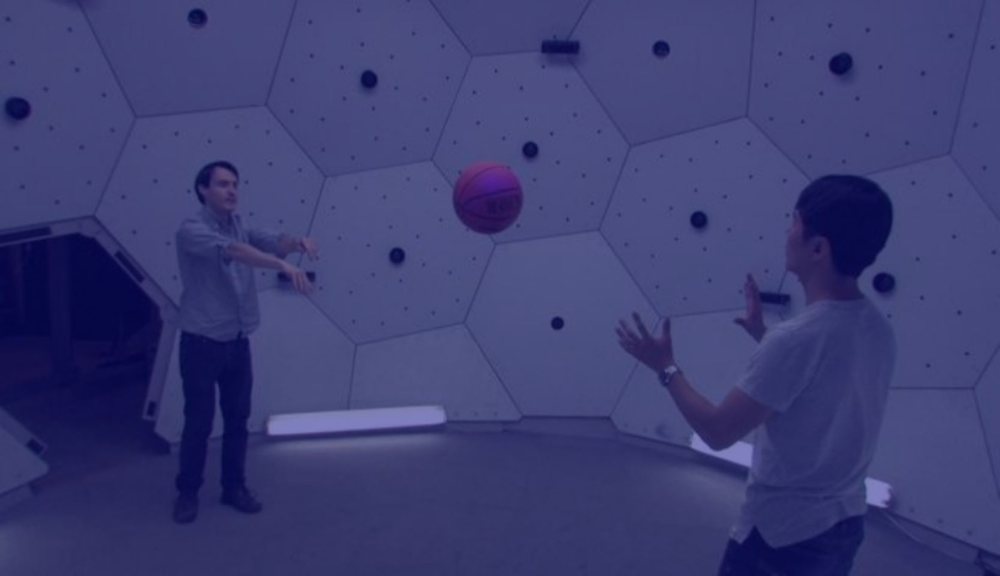
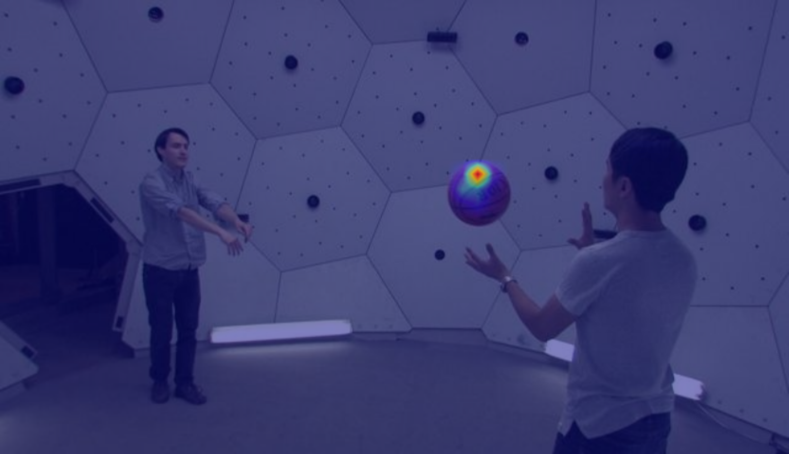
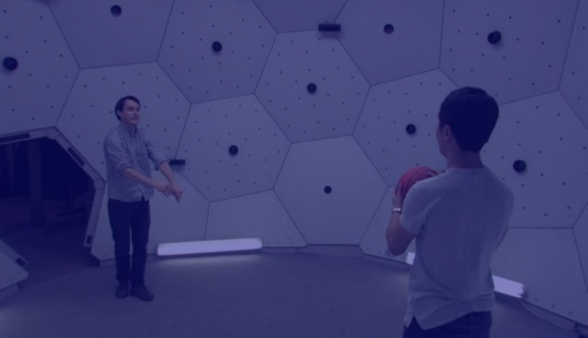
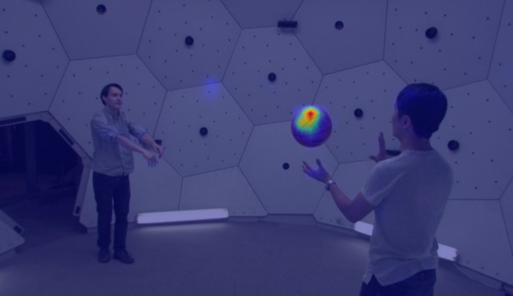
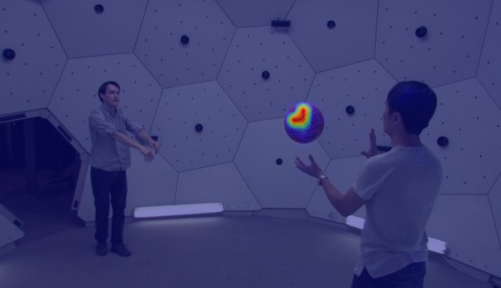
We report AJ, APD$_\text{3D}$, and OA after Sim(3) alignment. TrackCraft3R + ViPE surpasses DELTAv2 + ViPE and all feed-forward baselines, achieving the best AJ, APD$_\text{3D}$, and OA. TrackCraft3R + DA3 further surpasses DELTAv2 + DA3 and all feed-forward baselines by a large margin.
| Method | ADT | PStudio | DR | PO | Kubric | Average | ||||||||||||
|---|---|---|---|---|---|---|---|---|---|---|---|---|---|---|---|---|---|---|
| AJ | APD | OA | AJ | APD | OA | AJ | APD | OA | AJ | APD | OA | AJ | APD | OA | AJ | APD | OA | |
| (i) Iterative dense 3D trackers (use external depth and camera as input) | ||||||||||||||||||
| DELTA + ViPE | 0.509 | 0.695 | 0.814 | 0.499 | 0.781 | 0.696 | 0.405 | 0.585 | 0.764 | 0.456 | 0.629 | 0.812 | 0.289 | 0.372 | 0.963 | 0.432 | 0.612 | 0.810 |
| DELTAv2 + ViPE | 0.514 | 0.707 | 0.804 | 0.535 | 0.803 | 0.728 | 0.417 | 0.589 | 0.783 | 0.446 | 0.625 | 0.801 | 0.286 | 0.369 | 0.956 | 0.440 | 0.618 | 0.814 |
| DELTAv2 + DA3 | 0.615 | 0.822 | 0.813 | 0.557 | 0.850 | 0.709 | 0.449 | 0.622 | 0.782 | 0.530 | 0.725 | 0.802 | 0.335 | 0.411 | 0.959 | 0.498 | 0.686 | 0.813 |
| (ii) Feed-forward dense 3D trackers (pre-trained for 3D reconstruction) | ||||||||||||||||||
| St4RTrack | 0.593 | 0.768 | 0.832 | 0.572 | 0.755 | 0.810 | 0.353 | 0.571 | 0.684 | 0.397 | 0.658 | 0.686 | 0.119 | 0.190 | 0.770 | 0.407 | 0.588 | 0.756 |
| Any4D | 0.465 | 0.613 | 0.836 | 0.422 | 0.571 | 0.813 | 0.441 | 0.696 | 0.680 | 0.439 | 0.683 | 0.735 | 0.389 | 0.497 | 0.883 | 0.431 | 0.612 | 0.789 |
| TraceAnything | 0.593 | 0.763 | 0.841 | 0.523 | 0.693 | 0.813 | 0.207 | 0.355 | 0.733 | 0.204 | 0.365 | 0.693 | 0.242 | 0.325 | 0.820 | 0.354 | 0.500 | 0.780 |
| (iii) Feed-forward dense 3D trackers (pre-trained for video generation) | ||||||||||||||||||
| MotionCrafter | 0.446 | 0.604 | 0.804 | 0.504 | 0.666 | 0.814 | 0.493 | 0.617 | 0.917 | 0.420 | 0.641 | 0.730 | 0.218 | 0.301 | 0.873 | 0.416 | 0.566 | 0.828 |
| TrackCraft3R + ViPE | 0.668 | 0.769 | 0.941 | 0.680 | 0.816 | 0.894 | 0.584 | 0.703 | 0.941 | 0.584 | 0.726 | 0.894 | 0.303 | 0.394 | 0.960 | 0.564 | 0.682 | 0.926 |
| TrackCraft3R + DA3 | 0.863 | 0.951 | 0.945 | 0.729 | 0.871 | 0.889 | 0.652 | 0.771 | 0.939 | 0.729 | 0.868 | 0.894 | 0.421 | 0.505 | 0.959 | 0.679 | 0.793 | 0.925 |
For large motion, we fix the clip length to 12 frames and increase the temporal stride $s$ from 1 to 12 (in steps of 1), enlarging per-frame displacement. For long videos, we fix the stride to $s{=}1$ and increase the sequence length $L$ from 12 to 120 (in steps of 12). Curves are averaged over the sparse 3D tracking benchmarks.
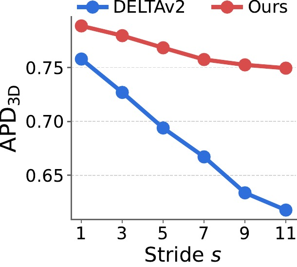
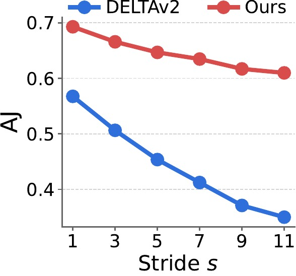
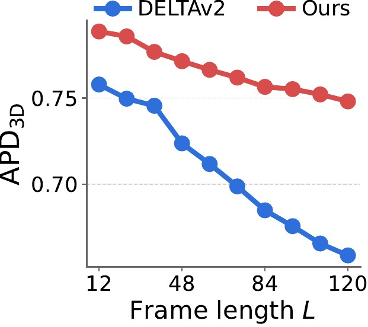
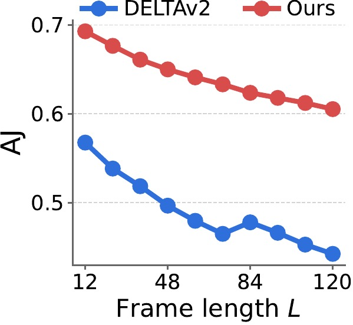
TrackCraft3R's performance drops much more slowly than DELTAv2 as stride $s$ or frame length $L$ grows, indicating that the learned motion prior generalizes well to large displacements and to long horizons beyond the training length (12 frames).
We compare inference time and peak GPU memory of TrackCraft3R, DELTA, and DELTAv2 at $448{\times}448$ resolution for 12- and 23-frame clips on a single NVIDIA A6000 GPU.
| Frames | Method | Time (s) ↓ | Memory (GB) ↓ |
|---|---|---|---|
| 12 | DELTA | 14.64 | 29.97 |
| 12 | DELTAv2 | 5.00 | 35.46 |
| 12 | TrackCraft3R (ours) | 3.91 | 7.63 |
| 23 | DELTA | 28.92 | 30.78 |
| 23 | DELTAv2 | 9.70 | 35.90 |
| 23 | TrackCraft3R (ours) | 7.84 | 7.63 |
TrackCraft3R is faster and lighter because it predicts trajectories in a single forward pass within a $1/16$ spatially compressed latent space, replacing the iterative refinement and explicit 4D cost volumes of DELTA and DELTAv2 with full 3D attention. The same trend holds for longer sequences.
We compare 3D trajectories predicted by TrackCraft3R and DELTAv2 on real-world ITTO and DAVIS videos. TrackCraft3R accurately estimates dense 3D trajectories under large camera motion, object motion, and occlusion, where DELTAv2 often fails. Note that the same query points are shared across methods.
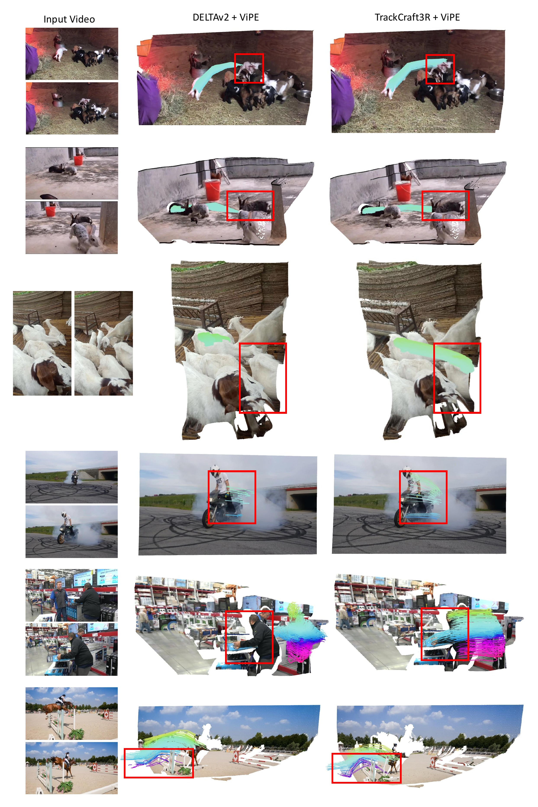